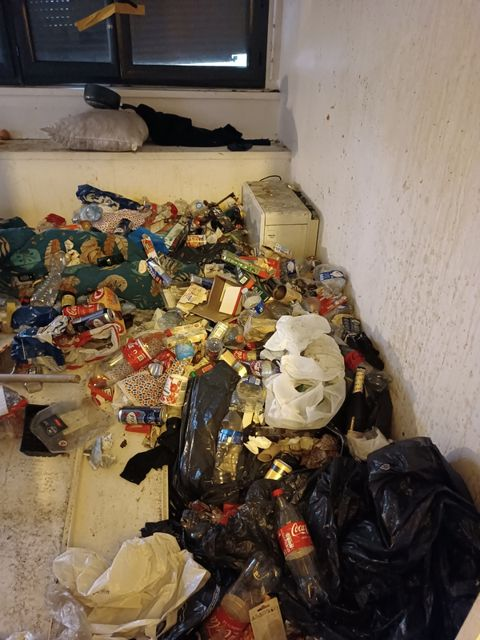
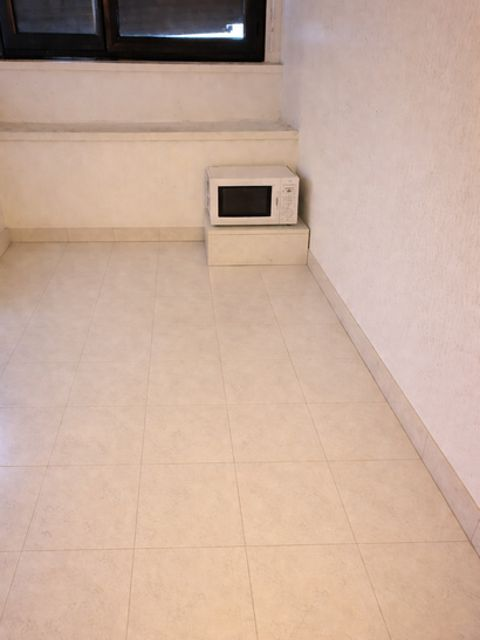
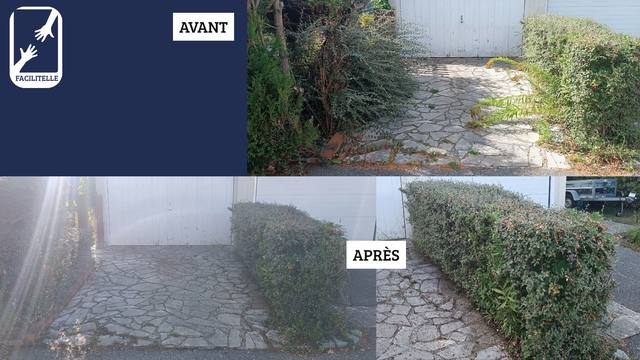
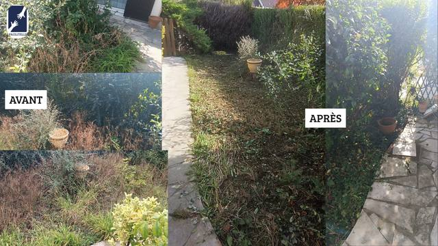

Débarras, jardinage et petits travaux, dans le respect des personnes.
Facilitelle est spécialisé auprès des personnes vulnérables. Les interventions chez les majeurs protégés suivent une approche adaptée, qui garantit le respect de leur dignité.
Zone d'intervention limitée à quatre départements. Ces prestations sont réalisées uniquement à Paris (75), dans les Yvelines (78), les Hauts-de-Seine (92) et le Val-d'Oise (95). Aucune intervention n'est possible en dehors de cette zone.
Vider un logement sans effacer une vie
Un soin particulier est apporté aux affaires personnelles : albums photos, objets religieux, souvenirs. Plutôt que de jeter, Facilitelle met en œuvre, quand c'est possible, des solutions pour que ces objets continuent à vivre.
- Transfert vers le nouveau lieu de vie
- Dépôt dans des lieux adaptés
- Envoi à la famille


Les petits besoins du quotidien, pris en charge
Livraison au domicile du majeur protégé et petites interventions pour un logement sûr et confortable.
Livraison
Vêtements, produits d'hygiène, courses alimentaires, meubles avec montage.
Petit bricolage
Pose d'un lustre ou d'une tringle à rideaux, fixation d'une étagère, remplacement d'un joint, changement d'ampoule.
Sécurité du logement
Installation d'une barre d'appui et des équipements de sécurité.
Montage de meubles
Montage de petits meubles livrés en kit, mise en place dans le logement.
* Toutes les prestations proposées ne permettent pas de bénéficier du crédit d'impôt. Pour savoir si une intervention y ouvre droit, faites une demande.
Des travaux plus importants ?
Les interventions peuvent être réalisées directement par Facilitelle. Pour les chantiers qui le demandent, Facilitelle peut aussi coordonner les travaux avec des professionnels de tous corps de métier. Le MJPM garde un interlocuteur unique.
Entretien extérieur
Jardins laissés à l'abandon, haies qui débordent sur la voie publique. Intervention avec notre propre matériel.
Paris et l'ouest francilien
La permanence téléphonique et la carte de paiement restent disponibles dans toute la France.
Avant, après
Deux interventions récentes. Touchez une photo pour l'agrandir.




Un logement à vider ou une intervention à prévoir ?
Devis gratuit dans le 75, 78, 92 et 95.